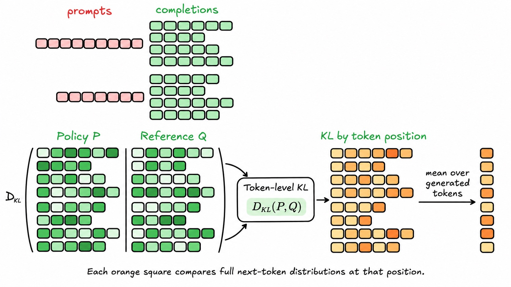

A policy can generate intermediate reasoning, receive a score for its final answer, and learn from that score. Long rollouts make fresh sampling expensive. This reading develops the advantages, importance weights, and clipped objective used to reuse a rollout batch carefully.
- Scope
- Printed slides 36–63, PDF pages 36–62. The current deck skips printed 39. Slide 63’s clipping check is the endpoint; GRPO starts later. Slides 36–42 connect to #19.
- Assigned papers
- None. Supporting primary sources and a short implementation reading are linked inline.
- Time
- 55–70 minutes for §1–§5, including the required cost accounting in §3; 20–25 minutes for the 20-point practice set (§6.1). Extra questions (§6.2) and the CPU/code reading (§7) are optional.
- By the end
- Separate outcome verification from reasoning quality; compute advantages; compare rollout generation with response scoring; derive an importance-weight identity; distinguish sequence and token ratios; evaluate the PPO clipped surrogate and identify its flat regions.
- Prerequisites
- Policy gradients, KL, and generation/scoring costs (#19); KV caches (#12). $x$ = prompt, $y$ = completion, $s$ = prompt plus prefix, $a$ = selected next token. $\pi_\theta$ is current, $\pi_{\rm old}$ generated the stored rollouts, and $\pi_{\rm ref}$ is the fixed KL reference. Logs are natural.
Slide-to-reading map
- 36–38 → §1.1: the reference penalty and token reductions.
- 40–43 → §1: SFT, reward evaluation, and policy updates; algorithm comparison is orientation.
- 44–48 → §1.2–§1.3: reasoning tokens and outcome/format rewards.
- 49–50 → §2: advantage signs and detached baselines.
- 51–52 → §3: rollout costs and batch reuse.
- 53–57 → §4: importance ratios and their limits.
- 58–63 → §5: clipped surrogate, cases, and gradients.
For printed labels 40–63, subtract one to obtain the PDF page. Source links below use PDF pages.
0Three predictions before reading
Spend 5 minutes, then return to these after §5.
A verifier accepts a mathematical answer. Has it established that every preceding reasoning step is valid? Which part of the sampled completion can a terminal-reward policy gradient update?
Predict first, then reveal
An answer checker establishes only what its rules test. It does not certify the whole reasoning trace. A terminal reward can weight the log-probability gradients of all generated tokens, including reasoning and the final answer.
Let the advantage be positive and the current-to-rollout probability ratio be 0.6, below the lower bound 0.8. Predict whether the PPO objective has zero slope with respect to this ratio.
Predict first, then reveal
It does not: reducing the probability of a good sampled action is an unfavorable change, so the objective retains the ordinary positive slope. Clipping does not flatten every ratio outside the interval.
A fresh prompt leads to a completion of 100,000 tokens, including reasoning and the final answer. With ordinary autoregressive decoding and a KV cache, how many dependent token choices are there? Does scoring that known completion also require 100,000 sequential model calls?
Predict first, then reveal
There are 100,000 dependent choices: a prompt prefill produces the first, followed by 99,999 cached decode passes. If the input fits the context window, the known completion can instead be scored in one causal bulk pass. That pass still performs substantial work across its token positions.
1What changes when the completion includes reasoning?
1.1 Keep the reference penalty and the reduction explicit
Handout #19 defined KL and derived the expected log-ratio penalty. For a fixed prompt,
$$D_{\rm KL}(\pi_\theta\|\pi_{\rm ref})=\mathbb E_{y\sim\pi_\theta}\left[\log\frac{\pi_\theta(y\mid x)}{\pi_{\rm ref}(y\mid x)}\right].$$The reference supplies a distributional anchor; it is separate from the scorer. A learned reward model can score new rollouts without a human judging every response. SFT and reward-based optimization are different training signals, and a practical pipeline can repeat or combine them.


Two distinctions matter. A full-vocabulary KL at a fixed prefix is nonnegative; a sampled token log-ratio can be negative. Also, averaging local KL values over a completion length is a length-normalized penalty. The sequence log-ratio in #19 uses a sum over generated tokens; its expectation under the current policy gives sequence KL. Specify which quantity and reduction an implementation uses.
For illustration, completion A visits two prefixes with local full-vocabulary KL values 0.2 and 0.4 nats. Completion B visits four prefixes, each with local KL 0.2. Compare each path’s sum and mean. Which path receives the larger charge under each reduction?
Predict first, then reveal
A: sum 0.6, mean 0.3. B: sum 0.8, mean 0.2. A has the larger mean; B the larger sum. These are local KL values along two supplied paths. Exact sequence KL would additionally average the sum over prefixes visited under the current policy, not declare either path alone to be the distribution-level KL.
1.2 The policy generates both intermediate work and an answer
Answer-only completion

Reasoning tokens followed by an answer

Write a completion as $y=(c,a_{\rm final})$, where $c$ is a sequence of intermediate reasoning tokens. A terminal reward can depend only on the final answer even though its policy-gradient coefficient weights every generated token:
$$\log\pi_\theta(c,a_{\rm final}\mid x)=\sum_{t=1}^{T}\log\pi_\theta(y_t\mid x,y_{<t}).$$Reasoning tokens can change the probability of a useful final answer by changing its context. The optimizer does not receive an explanation of which step helped unless the reward scheme supplies one. More generated reasoning is not automatically more accurate, and a correct final answer does not establish that the displayed trace is a faithful account of the model’s computation.
1.3 Outcome, process, and format are different checks
| Signal | What it tests | What it leaves open |
|---|---|---|
| Outcome | Final answer matches a known result; program passes specified tests | Uncovered cases, flawed extraction, validity of intermediate steps |
| Process | Intermediate work meets a stated step-level criterion | Evaluator errors and whether the criterion captures useful reasoning |
| Format | Required delimiters or output structure appear | Answer correctness and quality of the reasoning inside the structure |
Executable tests can replace expensive human judgments when a task admits meaningful checks. Their reward remains a proxy for what the checks cover. For example, testing a function only at positive inputs cannot establish behavior at zero or negative inputs.
DeepSeek-AI’s January 2025 R1 report, §2.2.2 describes accuracy and format rewards for R1-Zero; its accuracy checks include math answers and code tests. R1-Zero and the report’s multi-stage R1 pipeline should not be conflated. This historical example motivates the reward mechanism on slide 48; the GRPO algorithm itself is deferred.
A toy task asks for the larger of two integers. An answer parser takes the last integer in the completion, and the tests include only unequal positive inputs. Propose two missing cases and explain why “the verifier reward improved” is weaker than “the model learned a reliable comparison procedure.”
Predict first, then reveal
Include equal inputs and mixed-sign or zero inputs, and test missing/multiple final-answer fields under a specified extraction rule. Higher reward shows better performance under the existing checks. It does not establish coverage of omitted cases, parser reliability, or validity of the intermediate explanation. Keep a held-out evaluation with independently designed cases.
2Advantages change which samples are reinforced
2.1 Reward relative to a baseline
For a prompt $x$, choose a baseline $b(x)$ that does not depend on which response was sampled. Define an advantage
$$A(x,y)=R(x,y)-b(x).$$Holding the baseline fixed for this update, the estimator uses $A$ as its coefficient on $\nabla_\theta\log\pi_\theta(y\mid x)$. A positive advantage reinforces a better-than-baseline sample; a negative advantage discourages it; zero contributes no update. “Normalized reward” is informal shorthand: subtracting a baseline centers rewards but does not by itself divide by a standard deviation.
Suppose three equally likely responses have rewards 2, 5, and 8. The expected reward is 5. Taking that value as a fixed baseline gives advantages −3, 0, and +3. Only the reward-8 sample has a positive coefficient, although all three original rewards are positive.
Keep rewards $(2,5,8)$ but change probabilities to $(0.6,0.3,0.1)$. Compute expected reward and all advantages using it as the baseline. Which coefficients are positive now?
Predict first, then reveal
The baseline is $0.6(2)+0.3(5)+0.1(8)=3.5$. Advantages are $(-1.5,1.5,4.5)$, so both the reward-5 and reward-8 responses have positive coefficients. Advantage depends on the baseline, not on an absolute label that reward 5 is “good” or “bad.”
2.2 Why a response-independent baseline preserves the expected gradient
For a fixed prompt and positive probabilities on a finite response space,
$$\mathbb E_{y\sim\pi_\theta}[b(x)\nabla_\theta\log\pi_\theta(y\mid x)] =b(x)\nabla_\theta\sum_y\pi_\theta(y\mid x)=0.$$Subtracting such a baseline leaves the expected policy gradient unchanged. It can reduce its variance, although an arbitrary baseline need not improve variance. Exact expected reward is usually unavailable; practical algorithms estimate a baseline. Estimation choices matter. A sample’s own reward, or a mean that includes that same sample, is response-dependent and does not automatically satisfy this argument.
In a two-response model, let $P(A)=\sigma(\theta)=0.5$, rewards be $(2,0)$, and baseline $b=1$ be fixed for the update. The log-probability derivatives are 0.5 for A and −0.5 for B. Compute mean advantage and expected advantage-weighted gradient.
Predict first, then reveal
Advantages are $(1,-1)$ and their mean is zero. The gradient estimates are $1(0.5)=0.5$ and $(-1)(-0.5)=0.5$, whose expectation is 0.5. Averaging coefficients alone omits the different log-probability gradients they multiply.
3Why reuse a rollout batch?
3.1 Generation has sequential dependencies; known-response scoring can be parallel
Producing a $T$-token completion requires $T$ dependent token choices in ordinary autoregressive generation. A prompt prefill predicts the first token, followed by $T-1$ cached decode passes. A cache avoids recomputing earlier keys and values; each later choice still waits for the preceding selected token.
When the completion fits the context window, its next-token probabilities can be computed at all response positions in one causally masked forward pass. For prompt length $P$, the input needs $N=P+T-1$ positions to predict all $T$ response tokens, including generated EOS. This is the required cost distinction developed in #19 §3.3; a probability “lookup” is cheap only after the model has produced the logits and vocabulary normalization.
A batch contains eight completions of 100,000 tokens each, all generated in parallel with a KV cache. Assume equal lengths, ordinary autoregressive decoding, and enough context capacity. Count total generated tokens, dependent rounds for the batch, and cached decode rounds after the initial batched prefill. Could the eight stored completions be scored in one batch forward call? Does that mean scoring is constant work?
Predict first, then reveal
Total generated tokens: 800,000. The batch has 100,000 dependent rounds: one batched prefill plus 99,999 batched decode calls. Parallelizing eight completions does not make their combined token work disappear. A sufficiently capable implementation with enough memory can score the known completions in a batched causal pass; its work spans eight long sequences. Context capacity, memory, kernels, and hardware determine feasibility and elapsed time.
3.2 Store what remains fixed during reuse
Collect rollouts with $\pi_{\rm old}$. Store their prompts/prefixes, selected tokens, old selected-token log-probabilities, rewards, masks, and the advantages used for the optimization phase. After a parameter update, recompute current log-probabilities on those same tokens. Keep the stored denominator and advantage coefficients detached.
| Policy | Role | During optimization of this batch |
|---|---|---|
| $\pi_\theta$ | Current selected-action probabilities | Changes after each update |
| $\pi_{\rm old}$ | Distribution that generated this rollout batch | Stored probabilities stay fixed |
| $\pi_{\rm ref}$ | Reference for the KL regularizer | Fixed across many rollout batches |
Immediately after collection, current and rollout policies coincide, so selected-action ratios are 1. Once current parameters change, averaging old samples as if they came from the new policy introduces a distribution mismatch. Replacing the stored old log-probabilities with current values would hide that mismatch by making every ratio 1.
4Importance weights change the averaging distribution
4.1 Derive the finite-action identity
At a fixed state $s$, let $p(a)=\pi_\theta(a\mid s)$ and $q(a)=\pi_{\rm old}(a\mid s)$. Require $q(a)>0$ wherever $p(a)>0$. Then
$$\begin{aligned} \mathbb E_{a\sim p}[f(a)]&=\sum_a p(a)f(a)\\ &=\sum_a q(a)\frac{p(a)}{q(a)}f(a)\\ &=\mathbb E_{a\sim q}[r(a)f(a)],\qquad r(a)=\frac{p(a)}{q(a)}. \end{aligned}$$The identity is exact; a finite batch estimates its right side. A sampled action made more likely by the current policy gets weight above 1; one made less likely gets weight below 1. The old distribution determines how often it was observed. If an action was impossible under the old policy but possible now, no finite ratio can recover its missing observations.
Example: old probabilities $(0.25,0.75)$, current probabilities $(0.6,0.4)$, and values $f=(4,-1)$. The old unweighted expectation is 0.25; the desired current expectation is 2.0. Ratios are $(2.4,\;0.533333\ldots)$, and
$$0.25(2.4)(4)+0.75(0.533333\ldots)(-1)=2.0.$$A mean ratio of 1 holds under the exact old-distribution expectation when the support condition holds; a particular finite rollout batch need not have mean ratio 1. Ratios can become extreme as the policies diverge, producing high-variance estimates.
Before using the explorer, set $q(A)=0.05$, $p(A)=0.9$, $f(A)=4$, and $f(B)=-1$. A batch has 20 responses drawn independently from q. Compute the two importance weights and the exact current expectation. Then predict the importance-weighted batch mean when A appears zero, one, or two times. Does a batch with no A prove that the estimator is biased?
Calculate first, then check in the explorer
The weights are $r(A)=18$ and $r(B)=0.1/0.95=2/19$. The target is $0.9(4)+0.1(-1)=3.5$. With k occurrences of A, the weighted batch mean is
$$\widehat\mu_k=\frac{72k-(20-k)(2/19)}{20}.$$For k = 0, 1, 2, this gives $-2/19\approx-0.105263$, $3.5$, and $135/19\approx7.105263$. A single batch can miss A and underestimate the target. Unbiasedness concerns the average over repeated batches drawn from q: the expected A count is $20(0.05)=1$, and the expected estimate is 3.5. It does not require each batch to be accurate. Here, another A replaces one B and raises the estimate by $137/38\approx3.605263$.
Now let $q=(1,0)$ and $p=(0.8,0.2)$ for A and B, with the same values $(4,-1)$. Every old-policy batch contains only A. A student weights each observed A by 0.8 and claims that collecting more old-policy responses will recover the current expectation. Compute their estimate and the actual target. What assumption fails, and why is this different from question 4A?
Identify the missing support
The A-only weighted estimate is $0.8(4)=3.2$ for every batch size, while the target is $0.8(4)+0.2(-1)=3.0$. The old policy assigns zero probability to B, which has positive current probability. The ratio for B cannot be formed, and its −0.2 target contribution is never observed. More data from this same q cannot fix the support failure. In 4A, q(A) was positive: a particular finite batch could miss A, but repeated sampling could observe it.
4.2 A reusable policy surrogate
For a batch of fixed states and actions sampled under the old policy, use the stored advantage $A_i$ and current-to-old ratio
$$r_i(\theta)=\exp\big(\log\pi_\theta(a_i\mid s_i)-\log\pi_{\rm old}(a_i\mid s_i)\big).$$The unclipped surrogate to maximize is the mean of $r_iA_i$. Differentiating the ratio gives $\nabla r_i=r_i\nabla\log\pi_\theta(a_i\mid s_i)$, yielding the importance-weighted score-function update. For gradient descent, minimize -(ratio * advantages.detach()).mean(), with old log-probabilities detached. Do not multiply this differentiable ratio by another differentiable log-probability term; that would introduce an extra derivative.
4.3 A token ratio is not a whole-response ratio
For a supplied completion, the sequence ratio is a product of selected-token ratios:
$$r_{\rm seq}(y)=\frac{\pi_\theta(y\mid x)}{\pi_{\rm old}(y\mid x)}=\prod_t r_t =\exp\!\left(\sum_t[\log\pi_\theta(y_t\mid s_t)-\log\pi_{\rm old}(y_t\mid s_t)]\right).$$A whole-completion bandit model can use that ratio to change the response distribution exactly in expectation. Token-level PPO instead uses ratios $r_t$ at stored prefixes $s_t$. Each ratio corrects the conditional action distribution at that prefix; by itself it does not also correct how often the current policy would visit that prefix. Thus token-level PPO is a surrogate on old rollout states, not an exact change of the entire trajectory distribution. Long products can also have severe variance or numerical problems.
Two selected tokens have current probabilities $(0.6,0.7)$ and old probabilities $(0.3,0.5)$ under their respective identical prefixes. Find the token ratios, sequence ratio, and arithmetic mean of token ratios. Which belongs in the full-response importance identity?
Predict first, then reveal
The token ratios are 2 and 1.4. Their product is 2.8, also $(0.6\times0.7)/(0.3\times0.5)$. Their mean is 1.7. The sequence identity needs 2.8; a token-level surrogate may use the separate ratios but must not call their mean a sequence likelihood ratio.
5PPO clips favorable incentives, not the policy itself
5.1 Evaluate both branches before taking the minimum
For fixed sampled states/actions and fixed advantages, Schulman et al. (2017), equation 7 defines the clipped surrogate. We write its one-sample term as
$$\ell(r,A)=\min\big(rA,\;\operatorname{clip}(r,1-\epsilon,1+\epsilon)A\big),\qquad0\le\epsilon<1.$$Maximize the batch mean of $\ell$, or minimize its negative. This is only the policy-surrogate component; a complete trainer may also have a value loss, entropy term, and a reference penalty. The same letter “loss” is often used for either a maximization surrogate or its negative; check the optimizer’s sign.

5.2 The advantage sign selects the flat side
$$\ell(r,A)=\begin{cases} A\min(r,1+\epsilon),& A>0,\\ A\max(r,1-\epsilon),& A<0,\\ 0,& A=0. \end{cases}$$For positive advantage, the favorable change is raising the action’s probability; the term becomes flat only above $1+\epsilon$. For negative advantage, the favorable change is lowering that probability; it becomes flat only below $1-\epsilon$. On the other side, the objective still responds to an unfavorable change.
| Ratio | Advantage | $rA$ | Clipped branch | $\ell$ | $\partial\ell/\partial r$ |
|---|---|---|---|---|---|
| 0.6 | +2 | 1.2 | 1.6 | 1.2 | +2 |
| 1.5 | +2 | 3.0 | 2.4 | 2.4 | 0 |
| 0.6 | −2 | −1.2 | −1.6 | −1.6 | 0 |
| 1.5 | −2 | −3.0 | −2.4 | −3.0 | −2 |
Here $\epsilon=0.2$. Away from an active kink, the derivative with respect to the selected new log-probability is $r\,\partial\ell/\partial r$, since $r=\exp(\log p_{\rm new}-\log p_{\rm old})$. At a kink, left and right slopes differ; autodiff uses a boundary convention. A flat contribution gives no gradient from that term, but other terms and shared parameters can still move the action’s probability.
5.3 Implement the negative clipped surrogate
This original CPU teaching function accepts one flat list of valid sampled state/action pairs. For an LM, first select generated-token positions and choose an explicit token/response reduction. The function does not implement a full rollout loop, a critic, or a KL term.
def clipped_policy_loss(new_logp, old_logp, advantages, epsilon=0.2):
if new_logp.ndim != 1 or new_logp.numel() == 0:
raise ValueError("expected a nonempty vector of valid action log-probabilities")
if old_logp.shape != new_logp.shape or advantages.shape != new_logp.shape:
raise ValueError("new/old log-probabilities and advantages must match")
if not 0 <= epsilon < 1:
raise ValueError("epsilon must be in [0, 1)")
ratio = (new_logp - old_logp.detach()).exp()
if not torch.isfinite(ratio).all() or not torch.isfinite(advantages).all():
raise ValueError("ratios and advantages must be finite")
a = advantages.detach()
raw = ratio * a
bounded = ratio.clamp(1 - epsilon, 1 + epsilon) * a
return -torch.minimum(raw, bounded).mean()
Autograd differentiates through the current log-probability and its ratio. Old probabilities and advantages are fixed data during this phase. Clipping the ratio alone and discarding the minimum would incorrectly flatten unfavorable changes too. Replacing the final negative minimum with a minimum of two already-negated branches also reverses the branch selection: $-\min(u,v)=\max(-u,-v)$.
Reuse each batch for a limited optimization phase, monitor policy changes, then collect fresh rollouts. The source papers and implementations make further choices about advantage estimation, normalization, stopping, and auxiliary losses. A clipped policy term alone is not the full PPO training algorithm.
5.4 Put the pieces together: one frozen rollout batch
| Quantity | Question it answers | Held fixed for this batch? |
|---|---|---|
| Reward $R_i$ | How did the sampled completion score? | Yes: recorded evaluation |
| Advantage $A_i=R_i-b_i$ | How does that score compare with its baseline? | Yes: detached coefficient |
| Ratio $r_i=\pi_\theta/\pi_{\rm old}$ | How has this selected action’s probability changed since collection? | Numerator changes; stored denominator stays fixed |
| Sampled KL penalty $\beta\log(\pi_\theta/\pi_{\rm ref})$ | How does this response compare with the fixed regularization anchor? | Current log-probability changes; reference stays fixed |
Consider one prompt and two possible complete responses, Good and Bad, with $\pi_\theta(\mathrm{Good})=\sigma(\theta)$. This is a whole-response bandit example; each response is one action. Initially θ = 0 and both responses have probability 0.5. A rollout batch happens to contain two of each. Store their old probabilities as 0.5. Set rewards to 2 for Good and 0 for Bad, and use a known baseline $b=1$ fixed before sampling. Let ε = 0.2.
Use plain SGD with step size 1, no momentum, and only the negative clipped policy surrogate: β = 0 and no auxiliary losses. At collection, all ratios are 1 and the loss is zero because advantages $(+1,+1,-1,-1)$ average to zero. Its logit derivative is nevertheless −0.5, so gradient descent gives
$$\theta_{\rm new}=0-1(-0.5)=0.5,\qquad\pi_{\rm new}(\mathrm{Good})=\sigma(0.5)\approx0.622459.$$Re-score the same stored completions under the updated policy. Each row occurs twice and retains old probability 0.5:
| Response | Advantage | New probability | Ratio | Clipped contribution |
|---|---|---|---|---|
| Good | +1 | 0.622459 | 1.244919 | +1.2 |
| Bad | −1 | 0.377541 | 0.755081 | −0.8 |
The mean surrogate is $[2(1.2)+2(-0.8)]/4=0.2$, so the minimization loss is −0.2. Both response types are now in their favorable flat regions. A second plain-SGD step on this batch has zero gradient. This does not establish a globally optimal policy: the batch’s clipped incentive has saturated. Other samples, auxiliary losses, or optimizer momentum can still move parameters in a larger training run.
After the first update, a teammate overwrites each stored old probability with its newly computed current probability, retaining the same four responses. The ratios return to 1. Is that a valid fresh rollout batch? What must remain unchanged during genuine batch reuse?
Explain the denominator
No. The completions were sampled with old probabilities 0.5, not the new values in the table. Replacing the denominator hides the sampling mismatch and creates a different update. Preserve the sampled completions, their old log-probabilities, and the fixed rewards/advantages throughout this optimization phase. To refresh, actually sample a new batch from the updated policy and record that policy’s log-probabilities. The reference policy remains a separate anchor.
At one fixed prefix, a selected token has old probability 0.4 and current probability 0.3. First set $A=-2$ and $\epsilon=0.2$. Compute r, both surrogate branches, their minimum, and the local derivative of the minimization loss with respect to the selected current log-probability. Repeat with $\epsilon=0.3$, keeping the probabilities and advantage fixed. Finally, with $A=+2$ and $\epsilon=0.2$, is the contribution flat?
Predict first, then use the clipping explorer
The ratio is $r=0.3/0.4=0.75$. With negative advantage and ε = 0.2, the raw branch is −1.5 and the bounded branch is $0.8(-2)=-1.6$. Their minimum is −1.6; this favorable decrease is beyond the lower threshold, so the local loss derivative is zero.
With ε = 0.3, the interval becomes [0.7, 1.3]. Both branches are −1.5, and r is inside the interval. The surrogate ratio slope is −2, giving loss derivative $-r(-2)=+1.5$ with respect to the selected current log-probability. Widening the interval has restored an incentive to reduce this bad action’s probability further. With positive advantage and ε = 0.2, the minimum is $\min(1.5,1.6)=1.5$; the unfavorable decrease retains its gradient, with loss derivative $-0.75(2)=-1.5$. These are local derivatives for one selected-log-probability term, without a batch-mean factor.
6Practice for future quizzes
6.1 A 20-point, 20–25 minute set
Work without notes, state your assumptions, and check the marking guide afterward. These are original questions within the assigned scope.
A math model receives a format reward for enclosing a trace in required tags and an accuracy reward for a correct extracted final answer. Its total reward rises. What does each component test? Give one independent check needed before claiming that reasoning quality improved.
Predict first, then reveal
Format checks the required structure; accuracy checks the extracted answer under the verifier’s rules. Neither alone validates every reasoning step. Audit final-answer extraction and held-out problems, or use an independent step-level assessment if the claim concerns intermediate reasoning.
Marking: 1 point for each reward’s meaning; 1 for a concrete independent check tied to the claim.
Three equally likely responses have rewards $(1,4,7)$. Use expected reward as a fixed baseline for this update. Find the baseline and advantages; identify the positive coefficients. A student then says “mean advantage is zero, so the policy gradient must be zero.” Diagnose the missing factor.
Predict first, then reveal
The baseline is 4 and advantages are $(-3,0,3)$; only the reward-7 coefficient is positive. The estimator averages $A_i\nabla\log\pi_\theta(y_i\mid x)$, not advantages alone. Different response log-probabilities have different gradients, so zero mean advantage does not imply zero mean weighted gradient.
Marking: 1 point for baseline; 1 for advantages; 1 for signs; 1 for the missing log-probability gradient.
One rollout has a 20-token prompt and 80 generated tokens, including EOS. Count generation calls with a fresh prompt and KV cache, then the input length for bulk response scoring. After two policy updates on the same stored rollout, which selected-token log-probabilities belong in the importance-weight denominator?
Predict first, then reveal
One prefill plus 79 decode calls gives 80 dependent choices. Bulk scoring uses $20+80-1=99$ input positions. The denominator retains the probabilities of the policy that generated the rollout, not probabilities recomputed after either update.
Marking: 1 point for generation count; 1 for scoring length; 1 for fixed rollout-policy denominator.
At a fixed state, old probabilities are $(0.4,0.6)$ and current probabilities are $(0.7,0.3)$ for A and B. Let $f=(3,-1)$. Compute the unweighted old expectation, the current expectation, both ratios, and the importance-weighted old expectation. State the support condition.
Predict first, then reveal
Old: $0.4(3)+0.6(-1)=0.6$. Current: $0.7(3)+0.3(-1)=1.8$. Ratios: $(1.75,0.5)$. Corrected old expectation: $0.4(1.75)(3)+0.6(0.5)(-1)=1.8$. Every action with positive current probability needs positive old probability.
Marking: 1 point for the two direct expectations; 1 for ratios; 1 for the corrected expectation; 1 for support.
Use $\epsilon=0.2$, ratios $(1.4,0.6,0.6,1.4)$, and fixed advantages $(3,3,-3,-3)$. Find the four clipped-surrogate contributions and their mean, then the negative loss for a minimizer. Which two contributions have zero derivative with respect to their selected new log-probabilities? Repair loss = torch.minimum(-ratio*a, -ratio.clamp(0.8,1.2)*a).mean().
Predict first, then reveal
The contributions are $(3.6,1.8,-2.4,-4.2)$; their mean is −0.3 and the minimization loss is +0.3. Contributions 1 and 3 are in their favorable flat regions. Their selected-log-probability derivatives are zero; the other two surrogate derivatives, including the batch factor $1/4$, are +0.45 and −1.05.
Use torch.maximum(-ratio*a, -ratio.clamp(0.8,1.2)*a).mean(), or place a single minus outside minimum. Keep old log-probabilities and advantages detached.
Marking: 2 points for the four contributions (0.5 each); 1 for mean and loss sign; 1 for the two flat regions; 1 for the corrected branch operator/sign; 1 for identifying the fixed old/advantage data.
6.2 Optional extra questions
Open four additional reasoning questions
Use these for another short practice session.
An action’s old probability is 0.2 and its current probability is 0.4; its advantage is +1 and ε = 0.2. What is its ratio, its surrogate value, and its local slope? Must the optimizer restore its current probability to 0.24?
Predict first, then reveal
The ratio is 2, the contribution is 1.2, and its slope is zero in this term. The objective does not project probabilities back into the interval. Other terms or shared parameters can still move that probability. A fixed-reference KL penalty is a separate term, not supplied by the plateau itself.
For advantage −4, ratio 1.6, and ε = 0.2, compare the raw and clipped branches. What happens if an implementation simply uses the clipped branch without a minimum?
Predict first, then reveal
Raw is −6.4 and the clipped branch is −4.8, so the minimum keeps −6.4 with ratio slope −4. Using the clipped branch alone would make the term flat, even though a bad action became more likely. It would discard the intended corrective gradient.
A batch contains one sampled response, and its own observed reward is subtracted as the baseline. What advantage and update result? Why does detaching that baseline not by itself establish unbiasedness?
Predict first, then reveal
The advantage is zero regardless of which response was drawn, so this estimator contributes no policy update. The baseline still depends on the selected response even if detached from autograd. The response-independent-baseline cancellation in §2.2 therefore does not justify it.
For one selected token at the same prefix, $\pi_{\rm old}=0.1$, $\pi_\theta=0.15$, and $\pi_{\rm ref}=0.05$. Compute the PPO ratio and the sampled reference log-ratio. A student uses the reference as the PPO denominator; what gets confused?
Predict first, then reveal
The PPO ratio is $0.15/0.1=1.5$. The reference log-ratio is $\log(0.15/0.05)=\log3\approx1.098612$. A ratio of 3 to the reference does not correct the distribution that generated this batch. The rollout snapshot and the regularization anchor have distinct roles.
7Optional CPU checks and a real implementation
7.1 Run, mutate, and repair
Download 20_reasoning_policy_checks.py and run python3 20_reasoning_policy_checks.py with PyTorch on CPU. No GPU, network, model, or environment download is needed. The checks cover verifier coverage, advantages, importance identities and gradients, sequence ratios, the four clipping cases, boundary finiteness, detached old data, the practice calculations, and the complete frozen-batch update in §5.4.
clipped_policy_loss, replace the negative minimum by the negative maximum. At r = 1.5, A = +2, ε = 0.2, the correct surrogate is 2.4 with zero local slope; the mutation uses 3.0 and keeps reinforcing it. Restore the minimum, then remove it and use only the bounded branch: the r = 0.6, A = +2 case loses its corrective gradient. The lab checks these failures explicitly.7.2 Read CleanRL’s PPO policy loss
fe8d8a03c41a7ef5b523e2e354bd01c363e786bb, 312 lines. Focus on lines 188–214 (rollout collection), 241–267 (reuse and policy loss), and 287–293 (update and optional stopping). Excerpts below are verbatim and retain the upstream MIT license and notices: Copyright (c) 2019 CleanRL developers.ppo.py · optimization loop · lines 250–252 (verbatim)
_, newlogprob, entropy, newvalue = agent.get_action_and_value(b_obs[mb_inds], b_actions.long()[mb_inds])
logratio = newlogprob - b_logprobs[mb_inds]
ratio = logratio.exp()
The chosen actions are passed back to the current policy for scoring. b_logprobs holds the rollout log-probabilities collected under torch.no_grad(); it is not recomputed after each parameter update. Subtract before exponentiating to construct §4’s ratio.
ppo.py · policy loss · lines 264–267 (verbatim)
# Policy loss
pg_loss1 = -mb_advantages * ratio
pg_loss2 = -mb_advantages * torch.clamp(ratio, 1 - args.clip_coef, 1 + args.clip_coef)
pg_loss = torch.max(pg_loss1, pg_loss2).mean()
CleanRL negates both branches and takes their maximum, equivalent to our negative minimum. Its clip_coef is ε. The earlier epoch/minibatch loops reuse the rollout batch. The file also has a critic, discounted returns/GAE, optional minibatch advantage normalization, entropy/value losses, gradient-norm clipping, and an optional KL stopping test. Those additions are separate from the clipped policy term taught here.
- In a scratch copy of the upstream fragment, change
torch.maxtotorch.min. Run it with r = 1.5 and A = +2. Predict the loss and gradient change. - Read line 258’s
clipfracs. Would r = 0.6, A = +2 be counted as outside the interval? Does that mean the actual clipped-surrogate gradient is zero?
Predict first, then reveal
The correct minimization loss is −2.4 with zero local gradient. The mutation gives −3.0 with loss derivative −3 with respect to the selected new log-probability. The lab executes this exact upstream fragment and its mutation. The metric counts r = 0.6 as outside the interval, but the positive-advantage surrogate remains on its rising branch. An outside-range fraction and a flat-gradient fraction are different statistics.
7.3 Sources and the next boundary
- Course deck, printed 36–63 (PDF 36–62): assigned topic scope.
- Schulman et al. (2017), PPO, §3: clipped surrogate and Figure 1.
- DeepSeek-AI (2025), R1 report, §2.2.2: the rule-based reward example.
We stop with the sign-dependent PPO surrogate. The later deck introduces group-relative advantages and combines those ingredients into GRPO. Neither that full objective nor a production trainer is required for this handout.